文档版本：V1.0 文档状态：正式操作稿 编制日期：2026-07-23 适用系统：组合风险系统 访问地址：http://localhost:5173 保密级别：内部使用
| 版本 | 日期 | 修订内容 | 状态 |
|---|---|---|---|
| V1.0 | 2026-07-23 | 基于当前本地运行版本编制完整图文操作说明 | 正式操作稿 |
本手册面向组合风险经理、信贷风险经理、模型管理员、数据治理人员、预警处置人员、审计人员和系统管理员。截图使用本地模拟数据，页面指标会随数据日期、计算批次、预警状态和用户权限变化。
不同角色看到的菜单和按钮可能不同。未显示某个菜单或按钮时，应先确认当前用户是否拥有对应权限，不应通过修改浏览器地址绕过权限控制。
使用浏览器访问 http://localhost:5173，系统进入登录页。
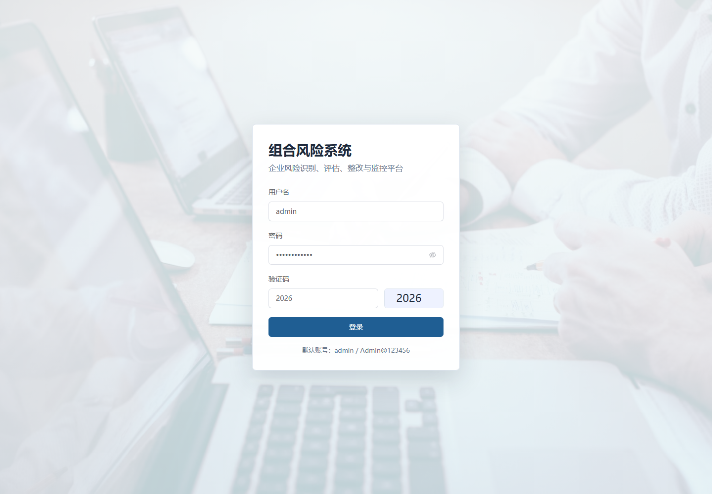
1. 在“用户名”输入框输入账号。
2. 在“密码”输入框输入密码。
3. 在“验证码”输入框输入右侧图片中的验证码。
4. 单击“登录”。
5. 登录成功后进入“风险总览”。
本地演示环境默认账号为 admin，默认密码为 Admin@123456。生产环境必须使用正式分配账号，并按安全制度修改密码。
| 提示或现象 | 原因 | 处理方法 |
|---|---|---|
| 用户名或密码错误 | 账号或密码不正确 | 重新输入，必要时联系管理员重置 |
| 验证码错误 | 验证码已变化或输入错误 | 刷新验证码后重新输入 |
| session expired | 登录会话已过期 | 返回登录页重新登录 |
| invalid token | 令牌无效或系统密钥已更新 | 清除浏览器会话并重新登录 |
| 页面一直加载 | 网关或后端服务不可用 | 联系运维检查服务状态 |
登录后页面由左侧菜单、顶部工具栏和主工作区组成。
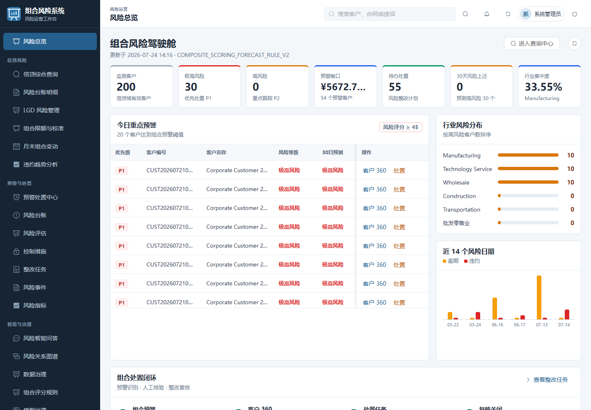
| 菜单分组 | 主要用途 |
|---|---|
| 信贷风险 | 信贷查询、风险台账、LGD、组合限额和违约趋势 |
| 预警与处置 | 预警案件、风险台账、评估、控制、整改、事件和指标 |
| 智能与治理 | AI、关系图谱、数据治理、评分、模型、订阅和报表 |
| 系统管理 | 用户、角色、部门、岗位、租户、日志、通知和参数 |
• 全局搜索：输入客户编号、合同编号或债项编号后进入信贷查询中心。
• 放大镜按钮：打开查询中心。
• 铃铛按钮：进入风险通知。
• 刷新按钮：刷新当前用户资料和权限。
• 用户区域：显示当前登录用户。
• 退出按钮：安全退出系统。
| 颜色 | 一般含义 |
|---|---|
| 红色 | 极高风险、超限、逾期或需要立即处置 |
| 橙色 | 关注、预警、部分有效或接近阈值 |
| 绿色 | 正常、通过、有效或已完成 |
| 蓝色 | 信息、处理中或当前选择 |
| 灰色 | 停用、观察中、无数据或只读 |
入口：左侧“风险总览”。
风险总览用于每天进入系统后的第一轮组合检查。
页面顶部显示：
• 监测客户：纳入组合评分的有效客户数。
• 极高风险：优先级为 P1 的客户数。
• 高风险：需要重点跟踪的 P2 客户数。
• 预警敞口：预警客户对应的风险敞口。
• 待办处置：未完成的风险整改任务。
• 30 天风险上迁：预测风险等级可能上升的客户。
• 行业集中度：当前风险客户最多或敞口集中的行业。
表格按照优先级和风险评分排列。可查看客户编号、名称、风险等级和 30 天预测。
操作建议：
1. 优先查看 P1 和红色风险客户。
2. 单击“客户 360”进入客户综合视图。
3. 单击“处置”生成或进入预警整改流程。
4. 对预测风险上迁但尚未违约的客户提前采取措施。
行业风险分布用于识别风险客户集中行业；近 14 个风险日期用于观察逾期和违约变化。柱状图反映每日数量，不应与存量风险客户数直接相加。
单击右上角刷新按钮重新加载看板。刷新不会自动重新计算全部模型；需要生成计算批次时，应前往对应专业页面执行。
入口：信贷风险 → 信贷综合查询。
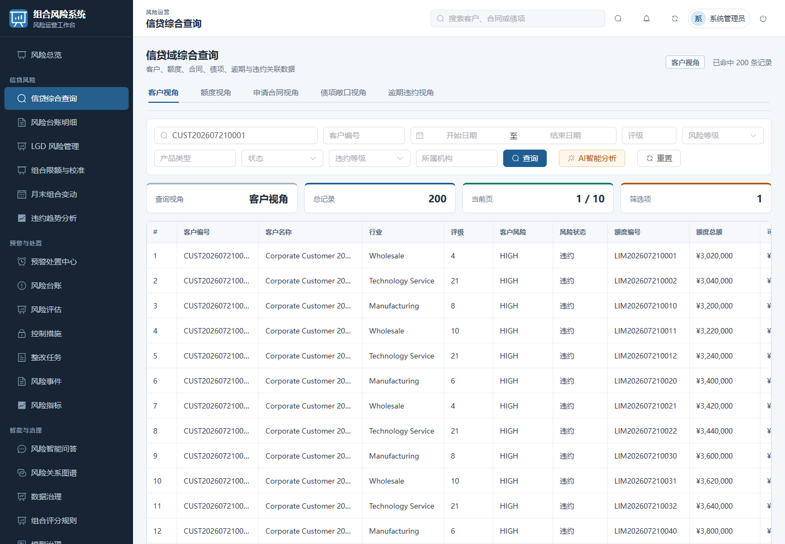
| 视角 | 查询对象 |
|---|---|
| 客户视角 | 客户、评级、额度和整体风险 |
| 额度视角 | 额度总额、已用、可用、期限和状态 |
| 申请合同视角 | 业务申请与合同的对应关系 |
| 债项敞口视角 | 支用、债项、EAD、PD、LGD 和 EL |
| 逾期违约视角 | 逾期、债项违约和客户违约 |
1. 选择查询视角。
2. 在“综合关键字”输入客户名称、客户编号、合同编号或债项编号。
3. 根据需要填写客户编号、日期范围、评级、风险等级、产品、状态、违约等级和所属机构。
4. 单击“查询”。
5. 查看查询摘要中的总记录、当前页和筛选项数量。
6. 在结果表中查看明细。
查询条件可以组合。条件越多，结果范围越小。未填写日期时，系统按当前查询视角返回全部可访问数据。
单击客户记录可进入客户分析入口。客户 360 应重点核对：
• 客户基本信息和归属机构。
• 当前有效评级和额度。
• 申请、合同和债项关系。
• 押品覆盖情况。
• EAD、PD、LGD、EL。
• 逾期和违约证据。
• 预警案件与整改状态。
单击“AI智能分析”，输入客户编号或名称，选择是否查询外部数据，然后单击“开始分析”。该入口与“风险智能问答”使用同一客户风险数据，但结果展示更偏向当前查询上下文。
业务时间轴应按照业务申请、合同、债项支用、风险敞口、逾期和违约顺序显示。同日事件按业务顺序排列。若发现支用早于合同、逾期早于支用，应提交数据质量问题。
入口：信贷风险 → 风险台账明细。
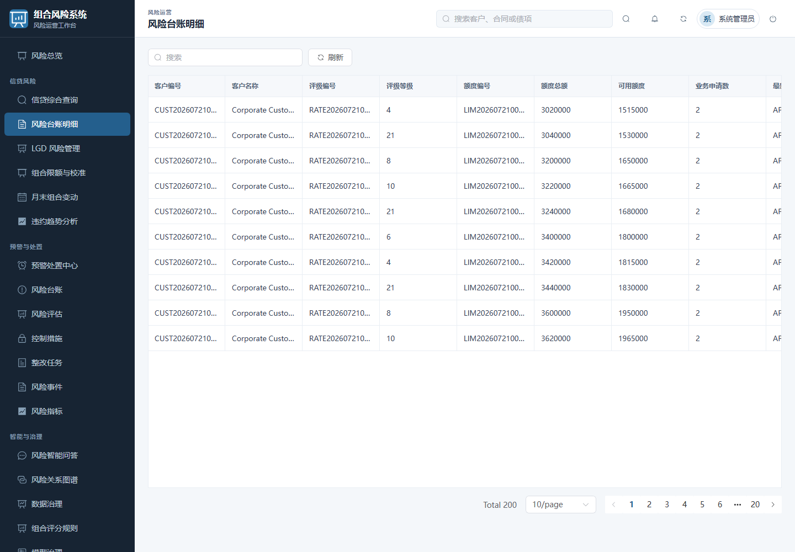
风险台账按客户汇总信贷域 12 张核心表的数据，用于快速判断一个客户的业务规模、风险暴露和违约状态。
| 字段 | 说明 |
|---|---|
| 客户编号、客户名称 | 客户唯一识别信息 |
| 评级编号、评级等级 | 当前有效评级 |
| 额度编号、额度总额、可用额度 | 当前有效额度 |
| 申请数、合同数、支用数 | 客户业务数量 |
| 未结本金、敞口余额 | 当前风险规模 |
| 押品数、担保金额 | 风险缓释情况 |
| 逾期数、最大逾期天数 | 逾期严重程度 |
| 债项违约数、最高违约等级 | 债项违约情况 |
| 客户违约状态 | 客户层汇总违约 |
| 台账风险等级 | 综合风险判断 |
1. 使用客户编号或名称筛选。
2. 按风险等级、逾期天数或敞口金额排序。
3. 对高风险客户核对评级、额度、债项、押品和违约信息。
4. 通过关联预警案件进入处置。
5. 导出前确认当前筛选条件和数据日期。
入口：信贷风险 → 违约趋势分析。
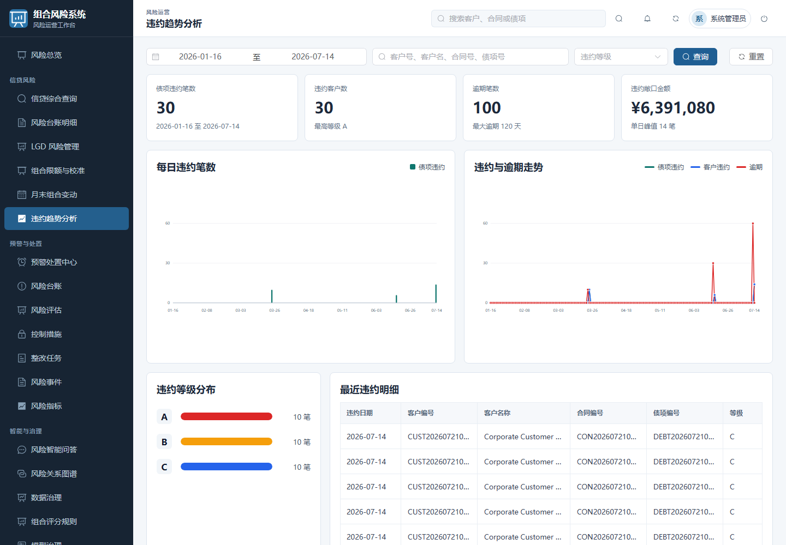
违约趋势用于按时间观察新增逾期、债项违约和客户违约，支持识别风险集中出现的日期、行业、产品和机构。
1. 选择开始日期和结束日期。
2. 选择需要的行业、产品、机构或客户条件。
3. 单击查询或刷新。
4. 查看柱状图中的每日新增数量。
5. 查看折线趋势中的变化方向。
6. 下钻查看当日风险明细。
• 每日新增表示当日新发生记录，不等于当前存量。
• 逾期日期需要结合宽限期和法定节假日判断。
• 债项违约与客户违约数量不同，一个客户可能有多笔违约债项。
入口：信贷风险 → LGD 风险管理。
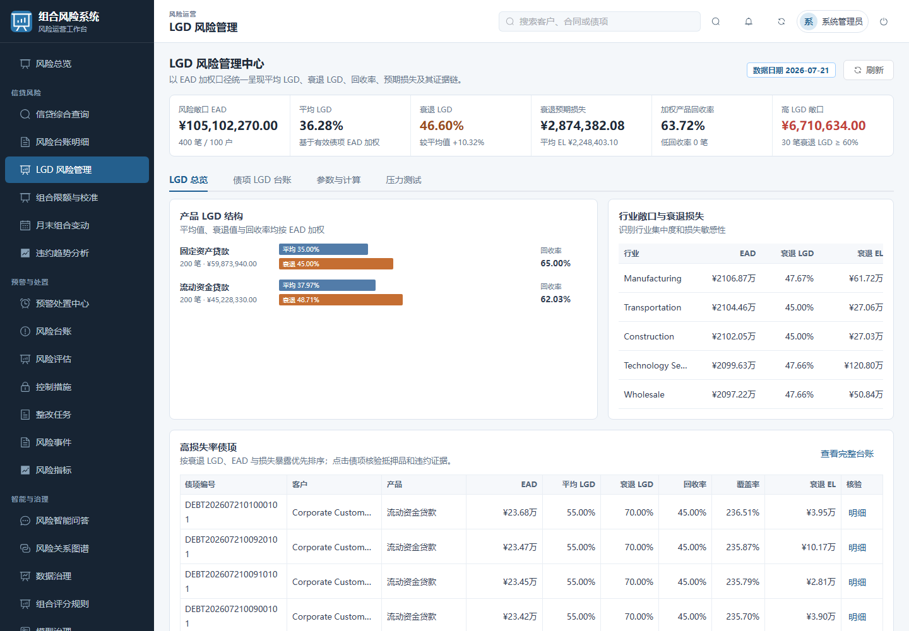
顶部指标包括风险敞口 EAD、平均 LGD、衰退 LGD、衰退预期损失、加权产品回收率和高 LGD 敞口。
重点判断：
• 衰退 LGD 是否明显高于平均 LGD。
• 高 LGD 敞口是否集中在少数客户或行业。
• 产品回收率下降是否推高预期损失。
• 押品覆盖率是否足以解释较低 LGD。
产品 LGD 结构图显示平均值、衰退值和回收率。行业表按 EAD 和衰退损失展示损失敏感性。
单击“债项 LGD 台账”页签。
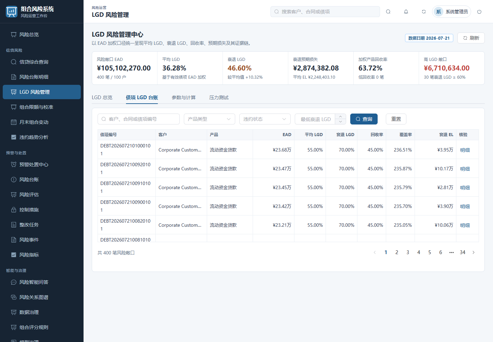
操作步骤：
1. 输入客户、合同或债项编号。
2. 选择产品类型。
3. 选择已违约或未违约。
4. 设置最低衰退 LGD。
5. 单击“查询”。
6. 查看 EAD、平均 LGD、衰退 LGD、回收率、覆盖率和衰退 EL。
7. 单击“明细”核对押品、逾期和违约证据。
“参数与计算”页签用于模型管理人员查看：
• 当前发布的 LGD 模型版本。
• 不同产品或风险分段的 LGD 参数。
• 回收率和押品折减参数。
• 历史计算批次。
单击“生成计算快照”会对当前有效敞口固化计算结果。执行前应确认数据日期、模型版本和参数均正确。
“压力测试”页签支持抵押品价值折减、回收周期延长和行业回收率下调等情景。
操作步骤：
1. 选择压力情景。
2. 单击“运行测试”。
3. 比较基准与压力下的衰退 LGD。
4. 比较衰退 EL 增量和高 LGD 债项变化。
5. 查看影响最大的债项样本。
压力测试不会覆盖正式 LGD 参数和风险敞口。
入口：信贷风险 → 组合限额与校准。
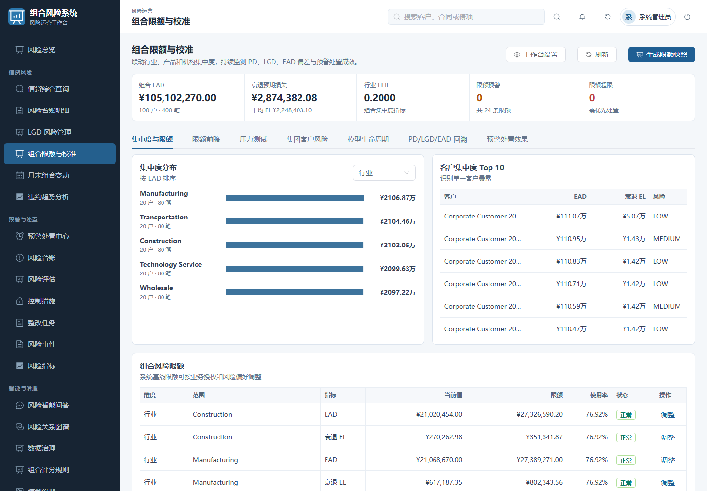
页面顶部显示组合 EAD、衰退预期损失、行业 HHI、限额预警和限额超限数量。
集中度操作：
1. 在集中度分布右上角选择行业、产品或机构。
2. 查看各分组 EAD 排名。
3. 查看客户集中度 Top 10。
4. 对单一客户或行业暴露过高的情况进行下钻。
限额状态：
| 状态 | 判断 |
|---|---|
| 正常 | 使用率低于预警比例 |
| 预警 | 使用率达到预警比例但未超过 100% |
| 超限 | 使用率超过 100% |
| 停用 | 限额定义已停用 |
1. 在“组合风险限额”表找到目标行业、产品或机构。
2. 单击“调整”。
3. 修改限额、预警比例、责任人或启用状态。
4. 单击“保存”。
5. 检查新使用率和监测状态。
限额调整属于重要风险操作，应按授权执行。预警比例必须大于 0 且不超过 100%。
单击右上角“生成限额快照”，系统保存当前数据日期下各限额的实际值、利用率、集中度和状态。同一限额同一日期重复执行会更新当前快照，不会重复生成多条。
单击“PD/LGD/EAD 回溯”页签。
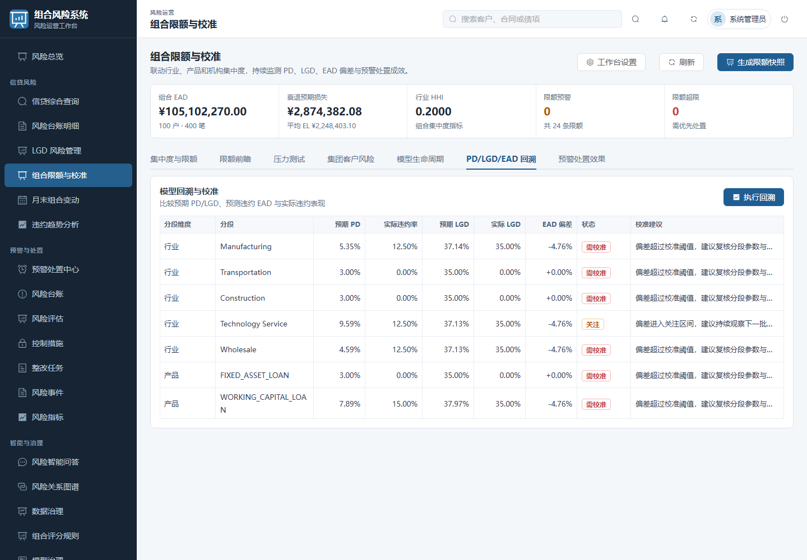
单击“执行回溯”后，系统按行业和产品比较：
• 预期 PD 与实际违约率。
• 预期 LGD 与实际 LGD。
• 预测违约 EAD 与实际违约暴露。
• 预测 EL 与实际损失。
状态说明：
| 状态 | 处理建议 |
|---|---|
| 稳定 | 参数表现处于正常区间，继续监控 |
| 关注 | 偏差进入关注区间，观察下一批结果 |
| 需校准 | 偏差超过阈值，复核样本和参数并发起模型调整 |
执行回溯会生成新的批次记录。模型管理员应记录异常分段、原因分析和后续动作。
单击“预警处置效果”页签。
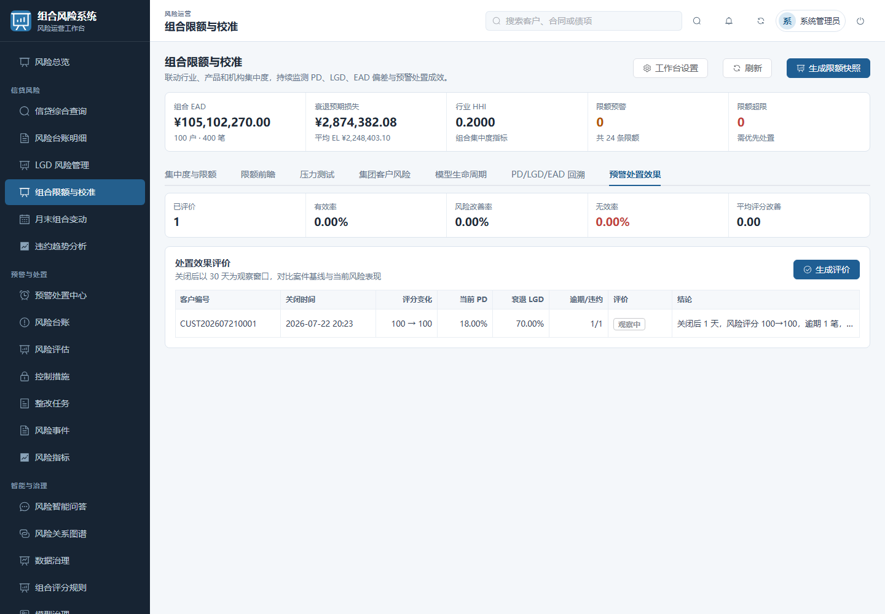
单击“生成评价”，系统对已关闭案件比较关闭时风险评分与当前风险表现。
| 评价 | 含义 |
|---|---|
| 观察中 | 关闭后不足 30 天 |
| 有效 | 风险评分明显下降且无逾期、无违约 |
| 部分有效 | 风险下降但未满足全部有效条件 |
| 无效 | 风险未下降或继续恶化 |
无效或部分有效案件应重新评估措施，必要时重新立案、调整限额或复核模型。
入口：预警与处置 → 预警处置中心。
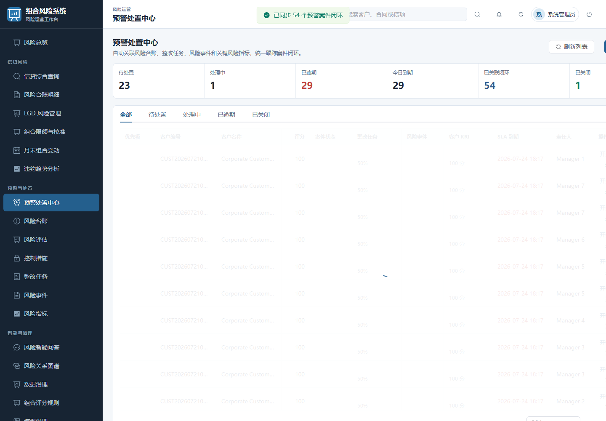
顶部显示待处置、处理中、已逾期、今日到期、已关联闭环和已关闭案件数量。
使用“全部、待处置、处理中、已逾期、已关闭”页签切换案件状态。列表显示优先级、客户、评分、整改任务、风险事件、客户 KRI、SLA、责任人和操作。
单击“同步预警闭环”，系统会：
1. 根据当前组合评分识别预警客户。
2. 新建或更新预警案件。
3. 关联风险台账。
4. 生成整改任务。
5. 同步风险事件和客户 KRI。
6. 更新案件摘要。
1. 找到待处置或已逾期案件。
2. 单击“开始处置”。
3. 确认责任人、整改任务和 SLA。
4. 按任务要求开展客户核验、催收、限额冻结、押品复核等措施。
5. 在整改任务中更新进度。
1. 确认必要核验和整改已完成。
2. 单击“关闭案件”。
3. 填写风险核验和处置结论。
4. 提交关闭。
5. 检查整改任务、风险事件和 KRI 是否同步更新。
6. 案件进入 30 天效果观察。
不得在风险事实未核实、任务未完成或结论为空时关闭案件。
入口：智能与治理 → 风险智能问答。
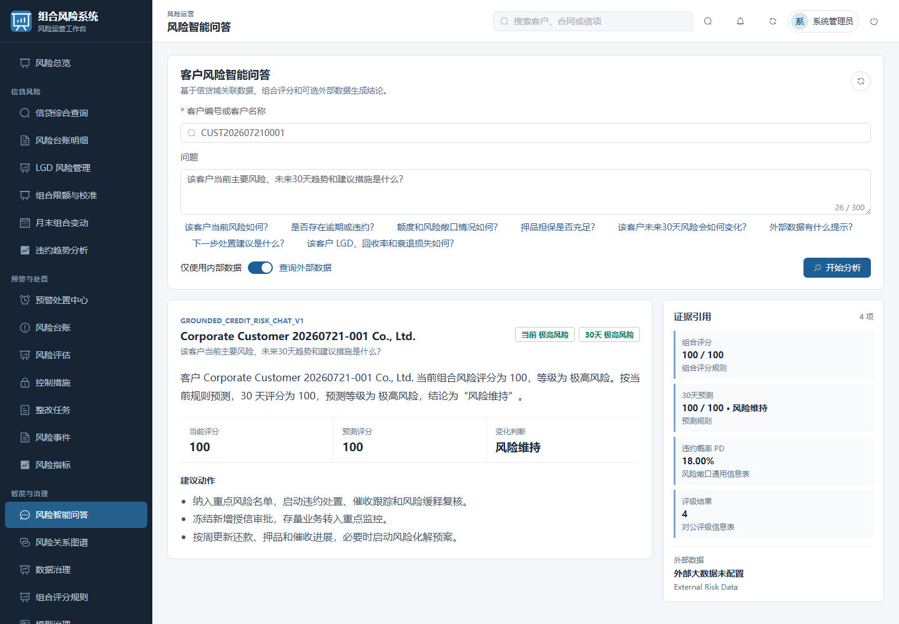
1. 输入客户编号或客户名称。
2. 输入问题，或选择页面提供的快捷问题。
3. 选择“仅使用内部数据”或“查询外部数据”。
4. 单击“开始分析”。
5. 查看风险评分、30 天预测、风险变化和建议动作。
6. 在右侧“证据引用”核对数据来源。
• 该客户当前风险如何？
• 是否存在逾期或违约？
• 额度和风险敞口情况如何？
• 押品担保是否充足？
• 未来 30 天风险会如何变化？
• 外部数据有什么提示？
• 下一步处置建议是什么？
• 该客户 LGD、回收率和衰退损失如何？
AI 结果应同时包含：
• 当前风险等级和评分。
• 30 天预测评分与变化判断。
• 主要风险信号。
• 建议动作。
• 证据引用和来源表。
• 外部数据状态。
AI 分析是辅助结论，不代替授信审批、违约认定和案件关闭。外部数据不可用时，系统会继续使用内部数据并标记降级状态。
入口：智能与治理 → 数据治理。
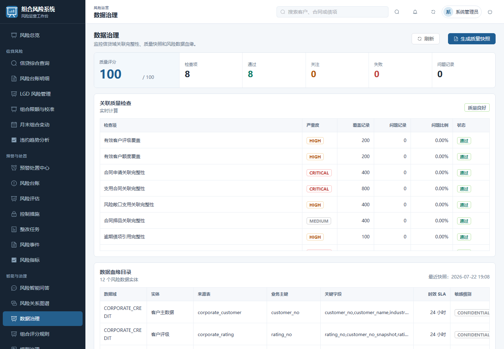
顶部显示质量评分、检查项、通过、关注、失败和问题记录。
1. 单击“生成质量快照”。
2. 等待检查完成。
3. 查看每个检查项的严重度、覆盖记录、问题记录、问题比例和状态。
4. 对关注或失败项目下钻异常数据。
5. 修复数据后重新生成快照。
• 有效客户评级覆盖。
• 有效客户额度覆盖。
• 合同与申请关联完整性。
• 支用与合同关联完整性。
• 风险敞口与支用关联完整性。
• 合同与押品关联完整性。
• 逾期债项引用完整性。
• 业务日期先后顺序。
血缘目录展示数据域、实体、来源表、业务主键、关键字段、时效 SLA 和敏感级别。数据异常时，应根据血缘从风险结果追溯到源业务表。
入口：智能与治理 → 组合评分规则。
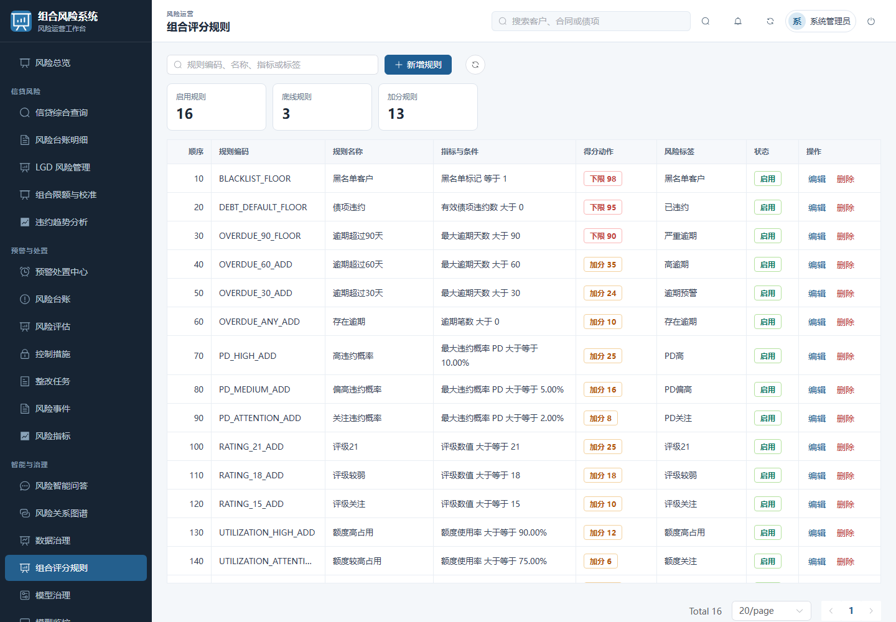
| 字段 | 说明 |
|---|---|
| 规则编号 | 规则唯一标识 |
| 指标 | 逾期、违约、PD、额度使用率、覆盖率等 |
| 操作符 | 大于、大于等于、小于、小于等于、等于 |
| 阈值 | 触发规则的数值 |
| 动作 | ADD 累加分值或 FLOOR 设置最低分 |
| 分值 | 规则触发后的评分影响 |
| 风险标签 | 输出给看板、案件和 AI 的标签 |
| 启用状态 | 是否参与生产评分 |
• 生产规则修改前应先在模型治理中创建草稿和模拟。
• 同一指标的 ADD 规则按引擎约束执行，避免重复累计。
• 高风险兜底规则应使用 FLOOR。
• 规则变更后检查风险客户数量和等级迁徙。
• 直接删除生产规则前必须完成影响评估。
入口：智能与治理 → 模型治理。
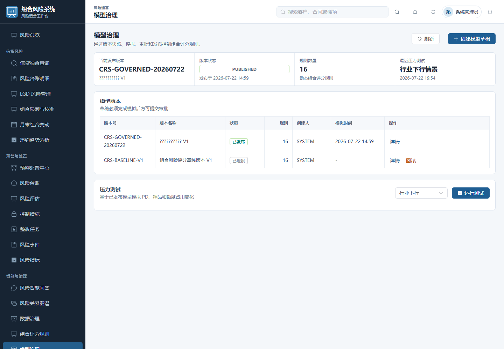
创建草稿 → 调整规则 → 模拟 → 提交 → 审批 → 发布 → 监控 → 回滚或退役。
1. 单击“创建模型草稿”。
2. 输入版本号、版本名称和说明。
3. 保存草稿。
4. 打开详情调整规则。
5. 单击“模拟”查看客户评分影响。
6. 确认后提交审批。
• 只有审批通过的版本可以发布。
• 同一模型同一时点只能有一个发布版本。
• 发布后应检查模型监控、预警客户和回溯结果。
• 新版本表现异常时，可对已退役版本执行回滚。
选择行业下行、利率上行或押品折减，单击“运行测试”，比较当前评分、压力评分和变化。压力测试仅用于评估，不直接改变生产评分。
入口：智能与治理 → 模型监控。
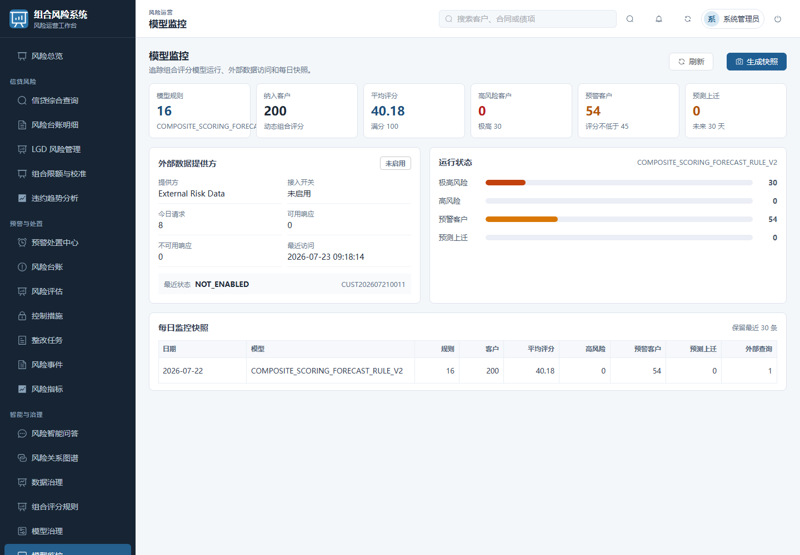
模型监控用于观察：
• 客户覆盖率。
• 平均风险评分。
• 高风险和极高风险占比。
• 评分分布变化。
• 模型运行日期和版本。
• 与上一快照的变化。
发现评分突然整体上升、覆盖客户大幅减少或分布异常时，应检查数据质量、规则版本和计算任务。
入口：智能与治理 → 预警订阅。
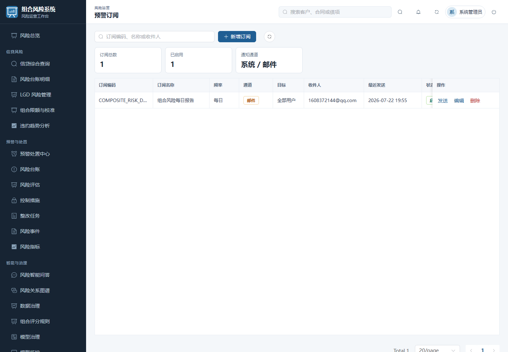
1. 单击新增。
2. 填写订阅名称。
3. 选择风险对象和触发条件。
4. 选择接收用户或角色。
5. 选择系统消息、邮件等渠道。
6. 启用订阅并保存。
需要立即验证订阅时，可单击分发按钮。检查通知记录和邮件状态。MQ 或邮件不可用时，主风险数据不受影响，但应在通知和日志中处理失败记录。
入口：智能与治理 → 风险关系图谱。
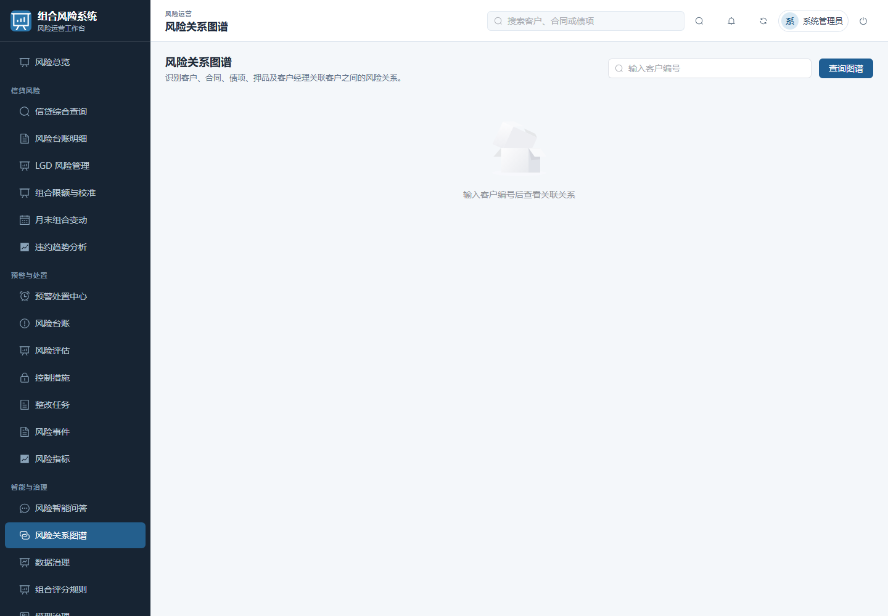
1. 输入客户编号。
2. 单击“查询图谱”。
3. 查看客户、额度、申请、合同、债项、押品、逾期、违约、案件和事件节点。
4. 单击节点查看编号、金额、日期和状态。
5. 沿客户—合同—债项—逾期—违约路径核验风险传播。
图谱节点较多时，应按对象类型或层级逐步展开，避免一次展示过多节点。
入口：智能与治理 → 管理报表。
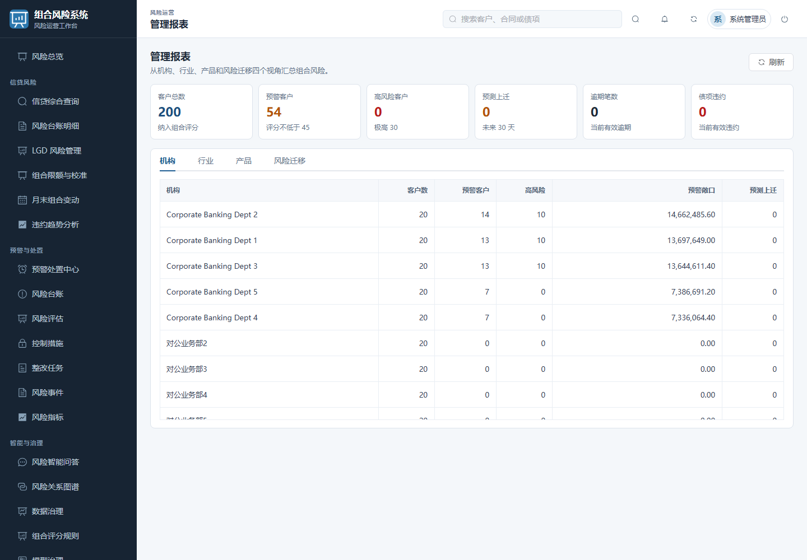
| 页签 | 内容 |
|---|---|
| 机构 | 各机构客户、预警、高风险和风险敞口 |
| 行业 | 行业客户、风险和集中度 |
| 产品 | 产品 EAD、EL、PD 和 LGD |
| 风险迁移 | 等级变化和风险上迁 |
1. 单击对应页签切换分析视角。
2. 检查顶部客户、预警、高风险、上迁、逾期和违约指标。
3. 按风险敞口或高风险数量排序。
4. 下钻到客户或业务明细。
5. 导出前确认数据日期和筛选范围。
记录风险编号、名称、分类、等级、责任部门、责任人、状态、识别日期和整改期限。信贷预警自动生成的台账应通过案件关联查看，不要重复人工新建同一风险。
录入发生可能性、影响程度、固有风险、剩余风险、评估人、日期和结论。评估结果应与控制措施和整改任务对应。
维护预防性、发现性和纠正性控制，设置执行频率、责任人、有效性和状态。
维护整改动作、责任人、截止日期、进度和状态。预警案件启动后系统会自动生成任务，处置人员应持续更新进度。
记录事件严重程度、发生时间、损失金额、责任人和处理状态。预警案件关闭后，关联事件进入复盘或关闭状态。
维护指标阈值、当前值、趋势、责任人和状态。案件闭环中的客户 KRI 会随案件和风险变化同步。
系统管理员可维护用户、角色、部门、岗位和权限。角色变更后，用户重新加载资料或重新登录即可获得新权限。
风险参数用于管理阈值和业务配置。修改前应确认参数用途、单位、作用范围和是否支持动态生效。
通知支持系统、邮件和短信渠道定义。生产环境的实际渠道由 Apollo 和运行配置控制。
| 日志 | 用途 |
|---|---|
| 登录日志 | 查询登录成功、失败和账号异常 |
| 操作日志 | 查询限额、模型、案件等操作 |
| 错误日志 | 查询接口错误和请求标识 |
| 外部访问日志 | 查询外部风险数据调用 |
| 模型审批日志 | 查询模型提交、审批、发布和回滚 |
1. 登录后查看风险总览。
2. 处理 P1、超限和已逾期案件。
3. 查看违约趋势和 30 天风险上迁。
4. 检查组合限额预警与超限。
5. 下钻重点客户台账、LGD 和押品。
6. 更新整改任务并记录处置进度。
1. 查看模型监控快照。
2. 检查 PD/LGD/EAD 回溯状态。
3. 关注需校准行业或产品分段。
4. 检查 LGD 参数和计算批次。
5. 对异常结果进行样本和数据质量核验。
1. 查看数据质量评分。
2. 处理失败和关注检查项。
3. 核对数据日期和任务完成情况。
4. 根据血缘定位源表问题。
5. 修复后重新生成质量快照。
• 复核集中度和限额设置。
• 分析行业、产品和机构风险变化。
• 评价已关闭预警案件效果。
• 审查模型回溯和压力测试。
• 形成管理报表并完成签字归档。
| 问题 | 检查方法 | 处理建议 |
|---|---|---|
| 页面显示 0 或空表 | 检查筛选条件和数据日期 | 重置条件、刷新或检查定时任务 |
| 页面返回 401 | 检查是否登录过期 | 重新登录 |
| 页面返回 403 | 检查角色权限 | 联系管理员授权 |
| 外部数据不可用 | 查看 AI 页面外部状态 | 使用内部结果并联系外部供应商 |
| 限额全为预警 | 检查限额和预警比例 | 按风险偏好调整，避免随意放宽 |
| 回溯大量需校准 | 检查样本量、数据日期和违约口径 | 先核验数据，再调整模型 |
| 案件无法关闭 | 检查结论和任务状态 | 完成必要任务并填写关闭结论 |
| 图表与台账不一致 | 检查流量/存量和数据日期 | 统一口径后复核 |
| 通知未发送 | 检查 MQ、邮件配置和日志 | 恢复服务并补偿发送 |
| 中文显示异常 | 检查数据库和文件字符集 | 统一使用 utf8mb4 和 UTF-8 |
• 不得共享账号或将管理员账号用于日常业务。
• 不得在聊天、截图或邮件中传播密码、令牌、私钥和数据库密码。
• 导出客户、合同、评级、逾期和违约数据前应确认授权。
• 外部数据查询仅发送必要的客户识别信息。
• 模型发布、限额调整和案件关闭必须使用本人账号。
• 离开终端前应退出系统或锁定计算机。
• 发现异常登录、越权或数据泄露时立即联系安全管理员。
| 领域 | 状态及含义 |
|---|---|
| 风险等级 | 低风险、中风险、高风险、极高风险 |
| 优先级 | P1 最高，P4 最低 |
| 限额 | 正常、预警、超限、停用 |
| 回溯 | 稳定、关注、需校准 |
| 处置效果 | 观察中、有效、部分有效、无效 |
| 预警案件 | 待处置、处理中、已逾期、已关闭 |
| 模型 | 草稿、评审中、已审批、已发布、已退役或回滚 |
• EAD：违约风险暴露。
• PD：违约概率。
• LGD：违约损失率。
• EL：PD × LGD × EAD。
• 集中度占比：分组 EAD ÷ 组合 EAD。
• HHI：各分组集中度占比平方和。
• 限额使用率：当前值 ÷ 限额。
• 实际违约率：违约债项数 ÷ 观察债项数。
• 实际 LGD：损失金额 ÷ 实际违约暴露。
手册截图采集自 2026-07-23 本地组合风险系统，使用模拟对公信贷数据。客户名称、编号、金额、风险评分、限额、案件状态和模型结果仅用于功能演示，不代表真实客户或生产风险结论。